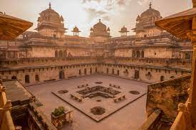

Madhya Pradesh:
Food:

Wheat is the staple food of the state. Some famous vegetarian dishes include poha and jalebi, bhutte ki khees,
and dal bafla. Popular non-vegetarian dishes include gosht korma, kebabs,
and roghan josh. Sweet dishes like mawa-bati, khoya jalebi, shrikhand,
and chikki are also local favourites.
Vegetation:

The dominant vegetation in this region consists mostly of moist deciduous
forests along with the bamboo thickets as well as the mixed forests.
The most common tree in the the dry deciduous forests of this area is the Sal.
Climate:
Climate. Madhya Pradesh has a subtropical climate with a
hot dry summer (April–June), followed by monsoon rains (July–September)
and a cool and relatively dry winter. The average rainfall
is about 1,194 mm (47.0 in).